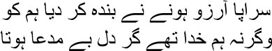
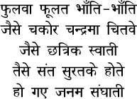
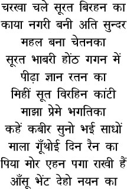
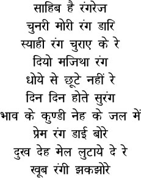
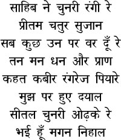

23

I’m a bundle of desire from head to toe,
and so a mere man
If my heart had been bereft of yearning
I’d have been God
 n some nights I would go to the Manikarnika Ghat at midnight and sit on the steps. I had no wish to stir from Kashi. The cool breeze from the Ganga soothed all my dissatisfaction and distraction. I wondered why I should bother to visit Calcutta. Why was I killing myself going on this long journey just for a little money! The flames from the pyres at Manikarnika burnt down all my yearnings and desires; some people I couldn’t see sprinkled holy water on their ashes. I even considered throwing away the shell of Islam and spending the rest of my life on the banks of the Ganga with the sacred Hindu mark on my forehead and prayer beads in my hand. May my existence be obliterated, may I be lost like a drop of water in the flowing currents of the Goddess Ganga. Are you laughing, Manto bhai? So you should, for what is this that Mirza Ghalib, so steeped in lust and sensuality, is saying? Believe me, there at the Manikarnika Ghat the mind would become a blank page, as though I had no past, as though a new life were about to begin. But why should the accursed Shahjahanabad let me go? I had lived off it; I would have to settle my accounts. A city of lights like Kashi was not for a hypocrite like me.
n some nights I would go to the Manikarnika Ghat at midnight and sit on the steps. I had no wish to stir from Kashi. The cool breeze from the Ganga soothed all my dissatisfaction and distraction. I wondered why I should bother to visit Calcutta. Why was I killing myself going on this long journey just for a little money! The flames from the pyres at Manikarnika burnt down all my yearnings and desires; some people I couldn’t see sprinkled holy water on their ashes. I even considered throwing away the shell of Islam and spending the rest of my life on the banks of the Ganga with the sacred Hindu mark on my forehead and prayer beads in my hand. May my existence be obliterated, may I be lost like a drop of water in the flowing currents of the Goddess Ganga. Are you laughing, Manto bhai? So you should, for what is this that Mirza Ghalib, so steeped in lust and sensuality, is saying? Believe me, there at the Manikarnika Ghat the mind would become a blank page, as though I had no past, as though a new life were about to begin. But why should the accursed Shahjahanabad let me go? I had lived off it; I would have to settle my accounts. A city of lights like Kashi was not for a hypocrite like me.
I had been sitting on the steps of Manikarnika Ghat on the eve of the day I left Kashi. I didn’t visit the brothel that night; I knew that I would be trapped by my lover if I went there; I would have no choice but to stay on. But as you can well understand, my brothers, I couldn’t afford to linger there, I had to reach Calcutta as quickly as possible. I knew that she was waiting for me, that she would stay awake for me all night; perhaps the same fate as Munirabai’s awaited her after my departure from Kashi. I wonder what happened to her. Perhaps she forgot me. That was what I wanted too, that she should forget me. I had prayed to the Goddess Ganga, may your current sweep away all memories of me. But the funny thing was that I couldn’t forget her; the memory of her body clung to me, her voice wafted to me across the lanes of Kashi. And I thought of Rabeya Balkhi. I could see a stream of fresh blood flowing down the steps of Manikarnika Ghat.
Do you know anything about Rabeya, Manto bhai? You’re unlikely to. The mullahs had wiped out Rabeya’s life. She was the first woman, the first poet, of the Islamic world who killed herself. A complex pattern of poetry, love, and death had been etched on the ground that Rabeya walked. She was the princess of Balkh; born with a terrible curse on her head, she considered herself without any refuge in this world. Rabeya had been seduced by poetry in childhood—she had even earned some fame as a poetess. But fate was lying in wait for her with a different script. Which was why she met Bakhtas one day. An ordinary young man, he was Rabeya’s brother Hareth’s slave. The flames of love leapt up at first sight. They began meeting in secret. Poems were written. Bakhtas, Bakhtas—Rabeya’s poetry was only about his beauty and wonder, just as Meerabai’s songs were only about her blue-skinned Shyam, about the playful ways of her lover Girigovardhan.
One day Hareth came to know of Rabeya’s secret trysts. Bakhtas was evicted from the capital; it was learnt a few days later that he had been murdered. The news reached Rabeya. Evening was descending then, Manto bhai. Standing at the window, Rabeya saw a flock of cranes piercing the canopy of the sky. Then she went into her bathroom, slit her vein with her hairpin, and stared in entrancement at the blood flowing out. With this blood she wrote her last poem on the wall—sip poison if you will, Rabeya, but may its taste be sweet on your tongue. I was very anxious that night, Manto bhai, what if, like Rabeya, my lover too … but why … in my world people didn’t love one another; why should a prostitute whom I had spent a few days with love me? How many of us can taste our own blood for the sake of love, Manto bhai? As I pondered over all this at Manikarnika Ghat, I heard someone hum:


The flute’s playing, but who’s playing it?
The lamp is burning without wick or oil
The lotus is blooming but it has no roots
When one flower blooms, so do a hundred
Just like the moonbird thinks of nothing but the moon
And the rainbird thinks of nothing but rain
The lover too has only one desire
He thinks of nothing but his beloved
A shadowy figure was seated at a distance. He was the singer, I realized. Nodding to himself, he continued:

Parted from her lover, she spins the wheel
Makes a lovely city of the body
And a palace of the mind
The love-wheel spins in the sky
Jewels of knowledge make a seat
Subtle are the threads she weaves
Made fine with love and reverence
Kabir says, listen to me,
I weave a garland of day and night
When my lover’s feet touch me
I shall offer my tears as a gift
As he sang, I went up to him to sit at his feet. A lean man dressed in nothing but a loincloth, and beads around his neck. Believe me, Manto bhai, this was no song, but sobs suppressed for many years. His eyes were closed, tears streamed down his face. The more he sang, the more he wept, and the more his face brightened. Looking at him and listening to him sing, I grew calm inside, soon I began to sing with him, ‘Charkha chale surat birhan ka.’
— Guruji …
— What guru, mian! I am only the servant Kabir. We’re servants of the same teacher.
— Who is this teacher?
— The heart flutters here and there with its material desires, mian. The teacher will not show himself until the hawk has pounced on this bird and taken it away. But mian, you’re leaving Kashi tomorrow, are you not?
— You know already?
Kabir sahib smiled. —I see you every day, wandering about the streets. I see a little more of you every day, and reach within you a little more every day. Isn’t this how one knows?
— Reach within me? How do you do that?
— I got that wrong, Mirza sahib. I don’t have the power to reach within you! These two beams of light that you see—Kabir sahib pointed to his eyes—things reach within me through these beams of light. Something interesting happened this way once, Mirza sahib. There was a pir named Shaikh Tuki here in Kashi. He complained to Sikandar Lodi about me, alleging that I claim I have seen God. Isn’t it funny? Why should God show himself to an ordinary servant like me? Never mind. The king issued a warrant to have me arrested, despatching people to my home to have me appear in his court. Why is an ordinary man like me being summoned to the king’s all-important court of justice, I asked them.
— You will be put on trial. One of the soldiers informed me.
— The emperor’s job is to deliver a verdict. Let him do this, by all means. I will accept whatever punishment he imposes on me. But why do I have to be present?
— Have you forgotten that you live in Jahanpanah’s kingdom?
— I am a subject of Ramrahim’s. I reside in his district. I don’t have the power to live in the boundless kingdom of your emperor.
— Then we have to tie you up and take you there.
— You’d better do that. You must demonstrate your power. But let me bathe first.
— Why?
— How can I appear in Jahanpanah’s court in an unclean state?
I took refuge in the breast of mother Ganga while the troops waited on the bank. As I swam and floated, morning turned to afternoon. The troops kept screaming at me, heaping abuses on me, but the fellows wouldn’t get into the water. The uniforms provided by the emperor would get wet, you see.
It was almost evening when I was tied up and brought to the royal court. I stood before Jahanpanah in silence. After a briefing from his troops, the emperor said, ‘I sent for you in the morning, and you have appeared in the evening. Does it take you so much time to bathe?’
— No, Jahanpanah. I don’t even bathe every day.
— Well then?
— I couldn’t get out of the water today because of the sights I saw while bathing.
— What did you see? Thousands of alligators rushing towards you?
A wave of laughter rolled around the court.
— It was a most interesting sight, Jahanpanah. You have seen the eye of a needle, haven’t you?
— A needle? What’s that?
— Pardon my insolence. Why should an emperor ever have seen a needle? How do I explain …
‘Bring a needle,’ Sikandar Lodi roared. ‘What is this object that I have never set eyes on?’
I laughed. ‘Why do you laugh, infidel?’ the emperor roared even louder. ‘What’s so funny?’
You see, Mirza, there is no end to the misery of those enraged by laughter. I recited a poem to myself as I gazed at the emperor.
Who will police this city?
There’s so much flesh everywhere
That vultures are the protectors
The rat’s a boat which the cat rows
The frog sleeps, the snake is on guard
The bull gives birth, the cow is barren now
So he suckles the calves every night
The jackal fights the lion every day
Who understands what the poet says?
A needle was brought to the court. The emperor examined it closely, peering through its eye. Then he turned to me and said, ‘What were you saying about a needle?’
— Did you see anything through the eye of the needle, emperor?
— No. It’s impossible to see anything through the eye of a needle.
— Now let me tell you what I saw … a row of camels passing through a lane narrower than the eye of a needle.
— Stop this nonsense, you liar.
— I’m not lying, huzoor. You know how far paradise is from this world, Jahanpanah. Millions of elephants and camels can pass through the gap between the sun and the moon. We view them through an opening the size of a point in our eyes. As you know, Jahanpanah, this opening in the eye is even smaller than the eye of a needle.
The emperor looked at me for a long time. Then he set me free. You can conceal many things, Mirza sahib, but not what the eye says. In joy and in sorrow, our hearts will always speak through our eyes. They make for such a wondrous pool. I can see deep within it. I see you every day, Mirza sahib, and I reflect, even though you have touched Ramrahim’s feet, you still have to slave away. It is not your lot in life to sit still.
I found this funny. I told Kabir sahib, ‘If there is such a thing as the greatest infidel in the world, it is me. I am not worthy of touching Ramrahim’s feet.’
— You worship words, Mirza sahib. He was born from words. Can he possibly keep you at a distance?
— But there is no pursuit of a mission in my life such as in yours.
— Do you suppose pursuing a mission is easy, mian? I do not have the ability. I have merely tended to the garment that the Lord weaves for ten months, so that it isn’t soiled. The garment will have to be returned to its rightful owner one day. Can one return a garment in a soiled state?
— I can return nothing but a soiled garment, Kabirji.
— How is that possible? You simply cannot do that, Mirza sahib. When the time comes, He will have the garment cleaned by you. Let me sing you Kabir the servant’s song, then:


The Lord is a master dyer
It’s he who dyed my scarf
He has replaced all the stains
With the shades of love
Far from fading when it’s washed
It brightens every day
He poured this colour in a tub
Whose water brims with feelings
He scrubbed the sorrows and the filth
And dyed the scarf with skill
The Lord who did all this work
My beloved, wise and kind
My body, heart, wealth and life
Are all just for him
Kabir says the great dyer
Looks kindly upon me
Shielded by this cooling scarf
I am so fulfilled
— It is he who has dyed your garment in the colour of love using the water in this pool of the world, mian. He has given it, and he will take it back, but not till he has coloured it with beauty and emotion and feelings. You don’t have the power to hand him a soiled garment. Go back home now, mian, it will soon be dawn, and you have to resume your journey.
— Aren’t you going home?
— Not till I have sung the Bhairavi for mother Ganga.
— I don’t want to go anywhere, Kabir sahib. I will stay on here in Kashi. I don’t enjoy rushing around.
Kabir sahib began to shake his head. —No mian, this isn’t right. You must travel along the road that life has opened up before you. No matter how much the suffering and the deprivation on this road, you cannot deny the path that the lord has ordained for you. Who else will travel on your road if not you?
— Will I get what I want in Calcutta?
— Maybe you will not get what you are looking for. But you will get many other things, which Shahjahanabad could not give you, which Kashi cannot give you. Did you know, mian, that I went away to Maghar from Kashi before my death? When people heard, they said, why do you want to leave a sacred place like Kashi for Maghar? If you die there, you will be born as an ass in your next birth. So be it. If the lord desires that I should be reborn as an ass, so be it. But it is he who has decreed that I must die in Maghar. Before reaching Maghar, I lived in the village of Kasarval by the Amee River for some time. Bijli Khan was the ruler of Maghar at the time. He arranged a place for us to stay. Maghar was passing through its twelfth year of drought; there wasn’t a drop of water to be found anywhere. A holy man named Gorakhnath came to live with us. Stamping his foot on the ground, he produced a stream of water. But even this did not solve the crisis. Then everyone came up to me. The more I tried to explain that I was not a holy man like Gorakhnathji, that I had no powers of any kind, the less they believed me. Honestly, mian, I did not have the power to make water flow. I told them, call out to Rama together, the Lord will do whatever is needed. Everyone began to call out to Rama. Believe me, mian, that collective incantation did bring forth rain. The Amee River swelled. I saw for myself on my way to Maghar what calling out to Rama could achieve. It was for this that the benevolent one had taken me from Kashi to Maghar. Even if I was born as an ass after this, what difference would it make?
Rising to his feet, Kabir sahib took my hand. —Come, mian, let me take you home.
— I can manage on my own.
He smiled. —You have not yet learnt to walk by yourself, mian. You have to stomach more humiliation. Not before that.
— How much more humiliation will I have to stomach?
— You have not yet faced humiliation in your life, mian. But you will now. I pray to Ramrahim to give you the ability to endure it. I know you have no home. May Kabir’s prayer be granted, so that you find your own home within words. Words are your roots, mian.
He planted a kiss on my brow as he spoke. Then, putting his hand on my shoulder, he said, ‘Let me tell you a story before you go, mian. You will leave with a happy heart. I shall tell you the story on our way.’
As we wound through the lanes of Kashi, Kabir sahib wove his story. ‘After many years of wandering about in the desert, a dervish arrived at a village. But this place was almost a wilderness too; there was no greenery to speak of anywhere. The people here made their living by tending to cattle. On the road the dervish asked one of the villagers whether there was somewhere to pass the night.
Scratching his head, the man answered, “There’s nowhere to stay in our village right now. No one comes here anyway. But you can try Shakir sahib’s house. He’s happy to let people stay.”
— So he’s a very good man?
— Yes, there’s no one hereabouts like him. He’s very rich, too. Haddad is nowhere near him.
— Who’s Haddad?
— He lives in the next village. Let me show you the way to Shakir sahib’s house.
Shakir and his wife and daughters gave the dervish a warm welcome. Instead of a single night, he stayed for several days. When he left, Shakir gave him plenty of food and water for his journey. Blessing him, the dervish said, “May Allah make you even more prosperous.”
Shakir smiled. “Don’t get taken in by what you see, baba. This too shall pass.”
The dervish was surprised. What did Shakir mean? Then he told himself, my way is not to ask questions. I must only listen in silence. The meaning will reveal itself one day. This was what his Sufi training had taught him.
Five more years passed in travelling through different lands. The dervish returned to the same village and made enquiries about Shakir. He learnt that Shakir now lived in the next village, where he worked at Haddad’s house. The dervish went to meet him. Shakir appeared much older than before, and his clothes were tattered. He greeted and looked after the dervish with the same warmth.
— How did things come to such a pass for you? The dervish asked.
— There was a terrible flood three years ago. All my cattle were swept away. So I had to seek help from Haddad bhai.
The dervish spent several days at Haddad’s house. When he was leaving, Shakir brought him food and water, just as he had the last time. The dervish told him, “I am saddened to see you in this condition. But I also know that the Lord does nothing without a reason.”
Shakir smiled. “This too shall pass.”
What did this mean? Would Shakir be able to turn himself around from his predicament? How? Although the questions occurred to the dervish, he pushed them aside. Wealth would come on its own.
After a few more years of travel, the dervish returned to the same village. He found Shakir a rich man once again. Haddad had no children. He had bequeathed all his property to Shakir before dying. This time too, the dervish spent several days with Shakir. And before he left, Shakir repeated, “This too shall pass.”
This time the dervish visited Mecca before returning to meet Shakir. Shakir had died. Visiting his grave, the dervish was surprised to see the inscription on it, which said, “This too shall pass.” The poor can become wealthy, mused the dervish, the rich men can become poor too, but how can a grave change? After this, the dervish visited Shakir’s grave every year and prayed next to it. On one visit, he found that everything had been swept away by a flood. Shakir’s grave had vanished too. Sitting in the ruined graveyard, the dervish looked at the sky and muttered, “This too shall pass.”
When he was no longer capable of wandering about, the dervish settled down. Many people used to throng to him for advice. Word had spread that no one was as learned as he was. The nawab’s prime minister heard this too.
It was an interesting affair, mian. The nawab wanted a ring with an inscription that would make him happy when he was melancholy, and depressed when he was joyful. Many jewellers came, many wise men appeared in his court, but the nawab was not pleased by any of their suggestions. Then his prime minister explained everything to the dervish in a letter, saying that this problem cannot be solved without your help. You must come to the court. The dervish was too old to travel. He wrote back with his suggestion.
After a few days, the new ring was presented to the nawab. He had been miserable for quite some time; putting the ring on, he glanced at it despondently. But when he read the inscription, a smile appeared on his lips, and then he burst into laughter. You know what was inscribed, of course, Mirza sahib. “This too shall pass.”’
The very next moment, I found myself alone on a road in Kashi. Kabir sahib was nowhere to be seen.